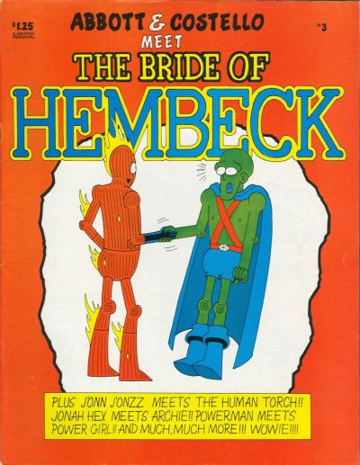

Titles
Abbott and Costello Meet the Bride of Hembeck (1980)
Air Warriors (1994)
Alien Encounters (1981)
Amazing Colossal Amazon Woman Album (1998)
Amazon Tales (1995)
Amazon Woman (1994)
Amazon Woman and the Quest for Eternal Youth (1995)
Amazon Woman Jungle Album (1998)
Amazon Woman: Invaders of Terror (1996)
Attack of the Amazon Girls (1994)
Babes & Biomechanics (1995)
Badderdude (1996)
Bah, Hembeck! (1980)
Blood & Kisses (1993)
Blood Gothic (1994)
Blood Letting (1995)
Deja-Vu (1982)
Dial H for Hembeck (1983)
Gore Shriek Annual (1990)
Gore Shriek Delectus (1989)
Heatseeker (1995)
Hembeck 1980 (1980)
Hembeck File (1981)
Hembeck: The Best of Dateline: @!!?# (1980)
Infectious 1994
Jimmy Olsen's Pal, Fred Hembeck 1981
Kill Me Slowly 1993
King of the Dead 1994
Lady Dracula 1995
Legends of the Living Dead 1994
Mug Shots 1980
Night of the Living Dead 1991
Night of the Living Dead: Aftermath 1992
Night of the Living Dead: London 1993
Night of the Living Dead: Prelude 1991
Night's Children 1991
Night's Children: Double Indemnity 1992
Night's Children: Foreplay 1991
Night's Children: Vampyr 1992
Perm Woman 1996
Prey 1993
Prey for Us Sinners 1995
Rabid 1994
Return of Girl Squad X 1994
Sage 1995
Scab 1992
Screaming Horror 2020
Shriek 1989
Shriek Special 1992
Smilin' Ed Comics 1980
Smoking Hole 1995
Sold Out 1986
Tales of Screaming Horror 1992
Vault of Screaming Horror 1993
Weird West 1994
Zombie War: Earth Must Be Destroyed! 1993

{kind=link}
{kind=link}
{kind=link}
{kind=link}
{kind=link}
{kind=link}
{kind=link}
{kind=link}
{kind=link}
{kind=link}
{kind=link}
{kind=link}
{kind=link}
{kind=link}
{kind=link}
{kind=link}
{kind=link}
{kind=link}
{kind=link}
{kind=link}
{kind=link}
{kind=link}
{kind=link}
{kind=link}